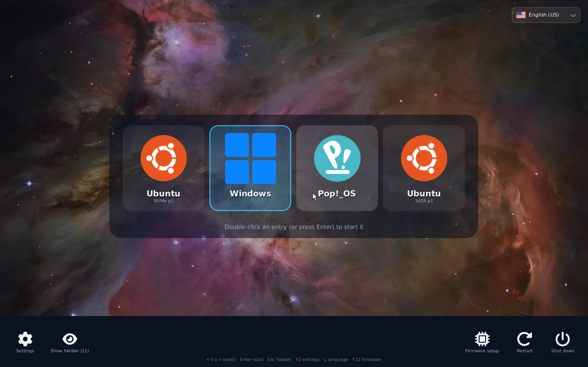
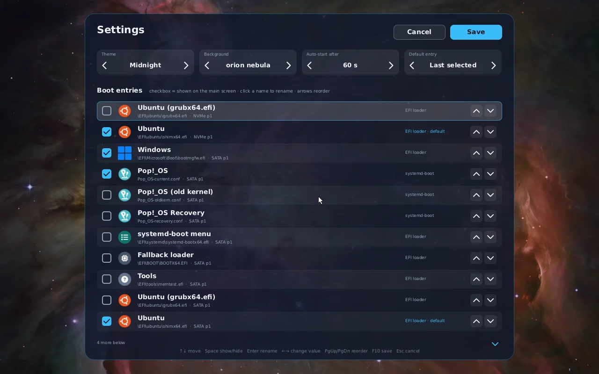
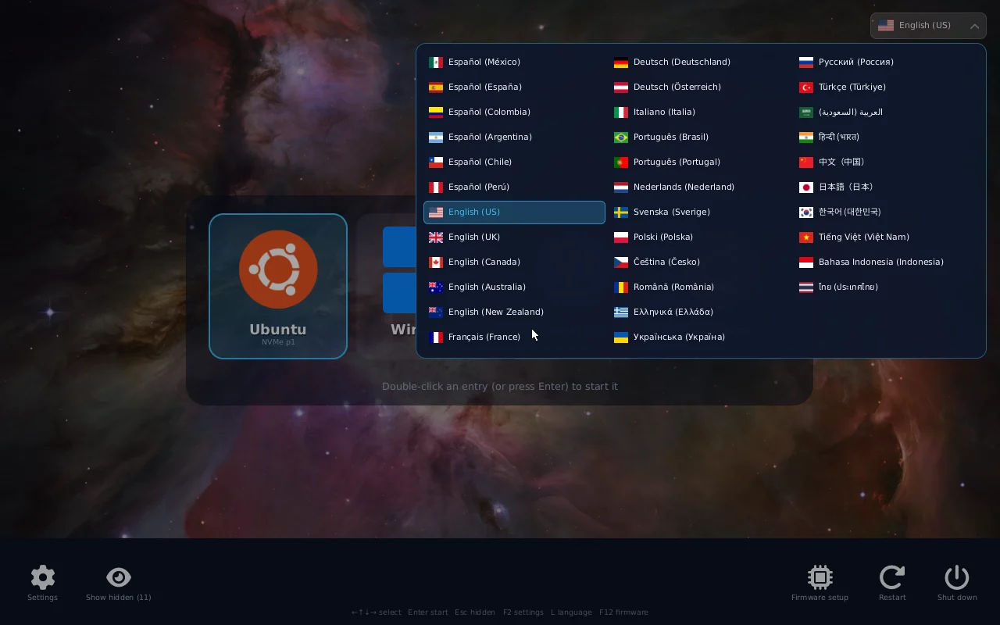
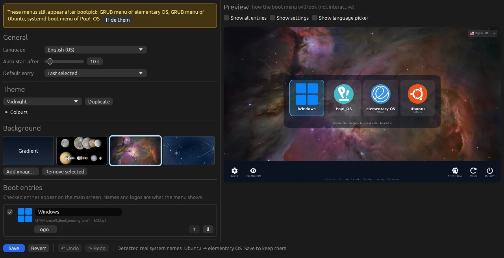

A boot menu you can click,
for every system on your PC.
bootpick replaces the text menu of GRUB and systemd-boot with big icons, a wallpaper and the mouse. It finds Windows and every Linux on all your disks by itself, starts the one you pick, and lets you rename, hide and reorder them from the menu or from a desktop app. Your existing boot loaders stay where they are.

What it does
Everything happens before any operating system loads, in the computer's own UEFI firmware.
Settings without editing files
Press the gear (or F2) in the menu, or open the desktop app. Both edit the same settings.


Install
bootpick is installed from Linux. It copies itself to the EFI partition, adds a firmware boot entry and puts it first. GRUB, systemd-boot and the Windows boot manager are not touched, so the firmware boot menu (often F12) can still start them directly.
1 · Build
Needs a Rust toolchain (rustup) and uv, plus cairo and the Noto fonts for the icons and the non-Latin scripts. On Debian, Ubuntu or Pop!_OS:
sudo apt install git build-essential libcairo2 fonts-noto-core fonts-noto-cjk
git clone https://github.com/Devace-93/bootpick
cd bootpick
tools/build.sh2 · Try it from a USB stick (optional)
Copies the menu to a FAT32 stick. Boot the stick from the firmware boot menu: nothing on the disk changes.
tools/make-usb.sh /media/$USER/MYUSB3 · Install
sudo ./install.shIt also installs the bootpick settings app and opens it. Run it again to update: if bootpick is already on the computer (even installed from another Linux), it updates that copy and asks whether to keep your settings or reset them.
Requirements
- A 64-bit UEFI computer (most PCs since 2012). Legacy BIOS mode is not supported.
- Secure Boot off, or the binary signed with your own key.
- Linux to install from. Windows-only computers are not supported yet.
- A mouse in the menu needs firmware with a pointer driver (most laptops have one). Without it, the keyboard does everything.
Turn it off or remove it
- Disable in the app: the next loader in the boot order starts, nothing is deleted.
- Uninstall in the app: removes the menu, its boot entry and the app, and shows the menus it hid again. From a terminal:
sudo ./install.sh --uninstall. - Stuck? Pick your old loader from the firmware boot menu (
F12,F9orEscon most machines).
The settings app
Open bootpick settings from the app menu. It asks for your password once and shows a live preview drawn by the same code as the boot menu.

What you can change
- Language, auto-start timer and default entry.
- Names and logos: import any image as a system's logo.
- Wallpapers: add your own pictures or remove the bundled ones.
- Themes: duplicate a built-in one and change every colour.
- Undo and redo for every change, a confirmation before losing unsaved work.
The menus after bootpick
Ubuntu and its family start through GRUB, Pop!_OS through systemd-boot, and both can show their own menu after bootpick. The app lists them and hides each one with a click (a marked block in GRUB's custom.cfg, timeout 0 in loader.conf), and puts them back just as easily.
How it works
bootpick is a small UEFI application written in Rust without the standard library. The firmware starts it like any other boot loader.
LoaderEntryOneShot; firmware options through BootNext.\EFI\bootpick\bootpick.conf, a plain text file every installed Linux can edit.Troubleshooting
| Symptom | Check |
|---|---|
| The computer still starts GRUB or Windows | The firmware may reorder boot entries after an update. Run sudo ./install.sh again, or move bootpick first in the firmware setup. |
| "Security violation" or nothing happens | Secure Boot is on. Turn it off in the firmware setup. |
| No mouse pointer | The firmware exposes no pointer device. Use the keyboard, or drop a UEFI mouse driver in \EFI\bootpick\drivers\. |
| A system is missing | Press Esc to show hidden entries, then tick it in the settings. Encrypted or LVM disks are fine: bootpick only needs their loader on an EFI partition. |
| GRUB still shows its menu | Hide it in the app. If it appears only after a start that did not finish, that is GRUB's recovery behaviour; tick "Also hide it after a forced shutdown" to hide it then too. |
| It hangs after picking a system | Look at \EFI\bootpick\bootpick.log: it shows whether bootpick handed over to the loader. Some firmware hangs with certain USB sticks plugged in, with or without bootpick. |